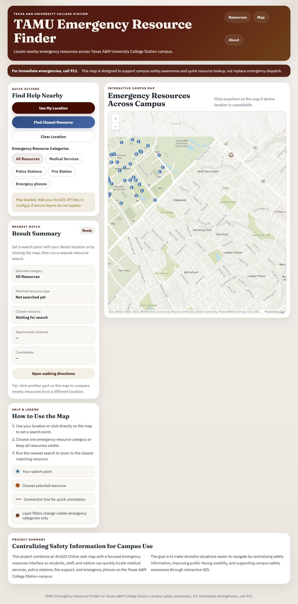

Field observations
Georeferenced campus emergency-phone locations collected with ArcGIS Field Maps.
GEOG 478 / Team WebGIS / Spring 2026
A team WebGIS project connecting field-collected campus emergency-phone locations with medical, police and fire resources in one interactive map.


Georeferenced campus emergency-phone locations collected with ArcGIS Field Maps.
ArcGIS Online layers integrated through the ArcGIS Maps SDK with a custom web interface.
Category filters, a selected search point, nearest-resource results and links to walking directions.
I collected georeferenced campus emergency phone locations using ArcGIS Field Maps, contributed to the project presentation, and assisted with supporting parts of the code. I was a team contributor, not the primary code author.
The project report credits Blane Frost, Ethan DeMelo, Purav Datta and Ritvik Balachanadar. The team combined campus observations with additional medical, police and fire locations and delivered the interactive app through GitHub Pages.
The ArcGIS Maps SDK / ArcGIS Online web map powers the live map layers. Opening the raw local HTML offline does not reproduce those connections.
Open the live Emergency Resource Finder ↗Course project for resource awareness. It does not replace emergency dispatch; service and device status can change.
Field Maps linked emergency-phone locations to a shared feature layer. The report describes differences between mapped and observed locations and notes that some devices were non-operational. That makes verification and maintenance essential to interpreting the layer.
The interface supports choosing a search point on the map or using device location, filtering categories and finding the nearest matching resource. These are team application features, not individual authorship claims.
I would record inspection dates and operational status separately from location, document positional uncertainty and maintain a source/update history for each resource category. A nearest geometric result also needs a clear distinction from an accessible or suitable route.
Sources: team final report, presentation, retained HTML/CSS/JavaScript and live application capture. The source code and connection configuration were inspected read only; no API keys or private configuration are copied into this portfolio.